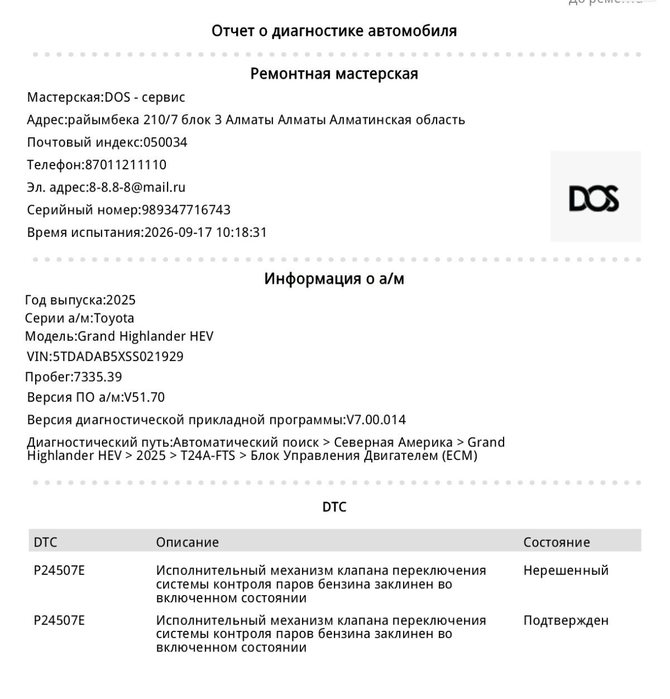
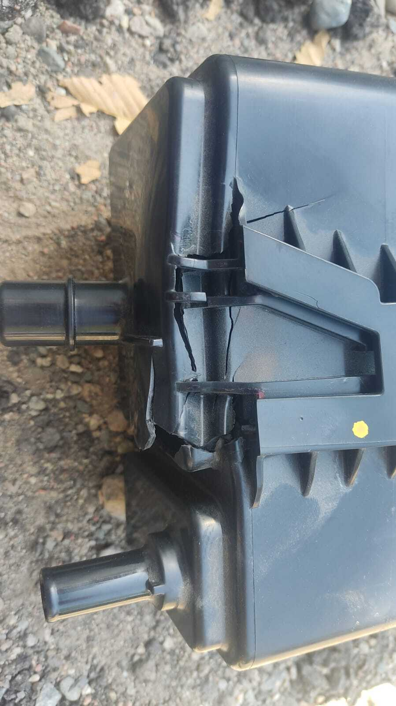
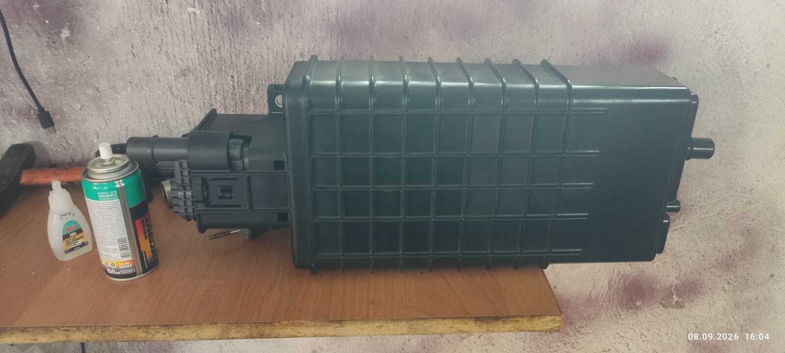

🚙 Toyota Grand Highlander HEV 2025 — загорелся Check Engine: компьютерная диагностика и повреждённый адсорбер
Очередной пример выполненной работы по компьютерной диагностике автомобиля — на этот раз практически новый Toyota Grand Highlander HEV 2025 года выпуска.
Автомобиль свежий, недавно доставленный. Несмотря на небольшой срок эксплуатации, на приборной панели загорелся Check Engine.
Так как машина практически новая, требовалось определить, связана ли проблема с электроникой автомобиля или имеется механическое повреждение, которое могло возникнуть при транспортировке или погрузке.
📋 Причина обращения
🚘 Автомобиль: Toyota Grand Highlander HEV
📅 Год выпуска: 2025
⚡ Силовая установка: Hybrid / HEV
⚠️ Жалоба владельца: горит Check Engine
💻 Задача: компьютерная диагностика и определение причины появления ошибки
Первым этапом было подключено диагностическое оборудование и выполнено считывание кодов неисправностей.
💻 Компьютерная диагностика Grand Highlander HEV

При проверке электронного блока управления двигателем был зарегистрирован код:
❌ P24507E
Описание диагностического оборудования указывало на проблему с исполнительным механизмом клапана переключения системы контроля паров бензина (EVAP).
Ошибка находилась в памяти системы как нерешённая.
Полученный код дал направление дальнейшей диагностики — необходимо было проверять систему улавливания паров топлива.
⛽ Что такое система EVAP?
Система EVAP предназначена для контроля и улавливания паров топлива.
Пары бензина не должны свободно выходить из топливной системы в атмосферу. Для этого автомобиль использует специальную систему, одним из элементов которой является адсорбер.
Также в системе присутствуют:
🔧 управляющие клапаны;
🔌 электрические соединения;
🧵 шланги и магистрали;
⚫ адсорбер;
📊 элементы контроля системы.
Поэтому наличие кода неисправности ещё не означает, что проблема обязательно находится в электрической части.
Необходимо проводить физическую проверку элементов системы.
🔎 После компьютерной диагностики перешли к ручной проверке
После считывания P24507E было понятно, в каком направлении необходимо продолжать поиск.
Провели ручную диагностику и визуальный осмотр системы EVAP.
Именно на этом этапе была обнаружена реальная причина неисправности.
❌ Адсорбер оказался механически повреждён.
По характеру повреждения возникло предположение, что деталь была повреждена при погрузке или транспортировке автомобиля.
Таким образом, проблема практически нового Grand Highlander оказалась связана не с возрастом автомобиля и не с естественным износом детали.
🚢 Почему важно осматривать недавно доставленные автомобили?
Свежий год выпуска ещё не означает, что на автомобиле полностью исключены механические повреждения.
До передачи владельцу машина проходит несколько этапов:
🚢 транспортировка;
🚛 перевозка автовозом;
🏗️ погрузка и разгрузка;
🚘 перемещение по площадкам.
На этих этапах теоретически могут быть повреждены элементы, расположенные в нижней части автомобиля.
Поэтому при диагностике недавно доставленной машины важно учитывать не только возможные заводские неисправности, но и механические повреждения при транспортировке.
⚠️ Электронная ошибка привела к механической неисправности
Этот Grand Highlander хорошо показывает разницу между считыванием ошибок и полноценной диагностикой.
Сканер показал:
P24507E → система контроля паров топлива.
Но компьютер не может просто написать мастеру:
«Адсорбер физически сломан».
Диагностический код показывает систему и характер обнаруженного отклонения.
Дальше необходимо проверять автомобиль вручную.
В нашем случае после получения кода P24507E был проведён осмотр, в результате которого и обнаружили повреждение адсорбера.

🔧 Рекомендация по ремонту
После обнаружения дефекта владельцу была дана рекомендация:
🔧 заменить повреждённый адсорбер

либо
🛠️ рассмотреть возможность его восстановления, если характер повреждения позволяет выполнить технически надёжный ремонт.
После устранения механического дефекта необходимо повторно проверить систему EVAP диагностическим оборудованием и убедиться, что ошибка больше не возвращается.
💡 Почему нельзя было просто удалить Check Engine?
Если стереть P24507E из памяти блока управления, лампа Check Engine действительно может временно погаснуть.
Но физически повреждённый элемент от этого не восстановится.
При следующем выполнении системой самодиагностики неисправность может быть обнаружена повторно, после чего Check Engine загорится снова.
Поэтому в данном случае правильная последовательность диагностики выглядела следующим образом:
💻 подключение диагностического оборудования;
🔎 считывание P24507E;
📊 определение системы, к которой относится неисправность;
⛽ переход к проверке EVAP;
🔧 ручная диагностика;
👀 визуальный осмотр;
❌ обнаружение механически повреждённого адсорбера;
🛠️ рекомендация по замене или восстановлению.
🧰 Что было сделано?
В рамках диагностики Toyota Grand Highlander HEV:
✅ проведена компьютерная диагностика;
✅ считана ошибка P24507E;
✅ определено направление дальнейшей проверки;
✅ проведена ручная диагностика системы;
✅ выполнен визуальный осмотр;
❌ обнаружен сломанный адсорбер;
🚢 предположительная причина повреждения — погрузочно-транспортировочные работы;
🔧 рекомендована замена либо технически возможное восстановление повреждённого элемента.
✅ Результат диагностики
Первоначально автомобиль приехал с одной жалобой:
⚠️ «Горит Check Engine».
После компьютерной диагностики получили ошибку P24507E, связанную с системой контроля паров топлива.
Но работа на этом не закончилась.
Дальнейшая ручная проверка позволила обнаружить реальный физический дефект — повреждённый адсорбер.
Таким образом, владельцу была указана конкретная неисправность и дано направление дальнейшего ремонта.
Это особенно важно для свежего автомобиля: вместо замены деталей наугад была найдена механическая причина появления Check Engine.
💻 Компьютерная диагностика современных автомобилей
На современных автомобилях компьютерная диагностика является первым важным этапом поиска неисправности, но она должна дополняться проверкой автомобиля.
Диагностический сканер помогает определить направление поиска, после чего специалист проверяет:
🔌 проводку и разъёмы;
📊 фактические параметры;
🔧 исполнительные механизмы;
🌬️ герметичность систем;
👀 физическое состояние компонентов.
Toyota Grand Highlander HEV 2025 года — хороший пример того, как ошибка электронного блока привела к обнаружению реального механического повреждения.
Итог работы:
Check Engine → P24507E → проверка EVAP → ручной осмотр → обнаружен повреждённый адсорбер → рекомендована замена либо восстановление.
🌐 Компьютерная диагностика Олег
☎️ 8-701-121-11-10 Олег
Читайте также: «Changan CS55 PLUS — ошибка P217700,» и «Lexus RX350 ошибка P0037 — Check Engine и Traction».